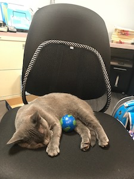
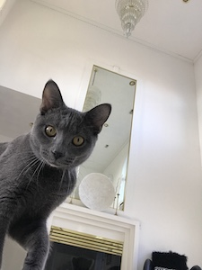
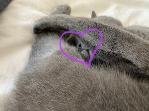

Above is my navigation, which includes my resume and art portfolio. On my homepage, I would like to introduce you to Mischka! My love and my life. I thought I would introduce her on my homepage because well... home is where the heart is!
Hooray for Kitty Kontent!!!
Mischka was rescued in early April of 2019 and has been living her best life ever since!
Her favorite hobbies include...

Sleeping

Vogue photoshoots (she's a very sassy girl)
...and finally...
More Sleeping!!!

However, it was only recently that she has traveled to Chicago to live with us permanently instead of living at my family home in Indiana.
IMO - she's DEFINITELY a city kitty!
She's has even become more adventurous in her daily pleasures!